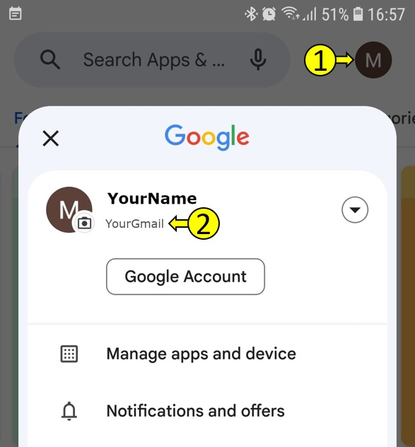

I value honesty, and I want to share that SECURElogBook is a project I’ve created entirely on my own.
SECURElogBook relies exclusively on code developed by either Android or myself. I made this decision for safety reasons and to ensure that the project remains independent. There’s a saying I particularly appreciate: ‘A camel is a horse designed by a committee.’
I’m capable of handling everything—from coding to designing the user interface, creating the website, producing YouTube videos, and even learning new skills, just as I’ve done with Google Play. Admittedly, it’s challenging to publish an app when you’re flying solo. On one hand, doing everything independently takes time. On the other hand, it allows me to maintain control over the quality of my work.
Like SECURElogBook itself, this website will continue to evolve over time. My primary goal is to publish it after more than four years of dedicated effort. I’ve invested not only my savings but also the last two years of hard work into this project.
Just like SECURElogBook itself, this website will continue to evolve with time. My primary goal is to publish it after more than 4 years of dedicated work.
Currently, the website serves as a community hub for SECURElogBook users during its closed beta stage (Early Access). To launch SECURElogBook on Google Play, I need to conduct a closed test with at least 20 users actively using the app for 14 consecutive days.
Over the past 4 years, I’ve honed my skills and developed the technology that powers SECURElogBook. For the last 2 years, I’ve invested my savings and 100% of my time into creating this powerful, flexible tool that’s now in your hands—whether you use it at work or elsewhere.
While I’ve priced the app at less than 2 Euros, this aligns with a new Google Play policy. By participating in the close test, you’re helping us move this project forward.
Rest assured, SECURElogBook is meticulously crafted to be error-free. Extensive testing and feedback from early users confirm its reliability.
When you pay for SECURElogBook, you’re investing in a high-quality program that could potentially transform your life. Your feedback matters, too! Feel free to suggest new features or report any issues you encounter (Link at the bottom of the page).
Thank you to those already using the app—the version you’ll receive is even better. As I continue to enhance SECURElogBook, I’ll prioritize flexibility and usability.
Remember, SECURElogBook isn’t just another program—it’s a powerful, adaptable tool designed for various tasks, whether you’re at work or not. And yes, I’m actively exploring an automatic feature for creating repetitive tasks (weekly, monthly, yearly) without compromising the tool’s versatility.
Join us in shaping the future of SECURElogBook!
If you are interested on a high-quality app that can do these things:
1. Alarm.
2. Keeping track of what you do.
3. Reminders.
4. Shopping list app.
5. Medication intake log.
6. Personal motivator.
7. Tool for remembering everything.
8. Tool for improvement, as you can analyse your data with the search system.
9. Personal diary.
And more!
All in one place and at your fingertips!
This video shows a few things that you can do with SECURElogBook:
2. Unlocking the Power of SECURElogBook: Your Personal Data Companion
In the video, I briefly touched on some of SECURElogBook’s capabilities. But did you know that this flexible tool isn’t just for personal use? It’s also applicable in professional settings.
3. What makes SECURElogBook exceptional?
. Your Data, Your Control: With SECURElogBook, your data remains yours—no cloud storage, no external access. It’s all stored locally, ensuring your privacy and security.
. Infinite Storage Capacity: Need to store vast amounts of information? SECURElogBook’s import/export system ensures you won’t hit any limits.
. Effortless User Interface: I’ve meticulously designed an intuitive interface. Adding data is a breeze—even when the app is locked with a security PIN.
. Powerful Search Functionality: Imagine grouping and analysing data effortlessly. SECURElogBook’s search system empowers you to draw meaningful conclusions.
4. How SECURElogBook can transform your life?
. Health Tracking: Record what you eat, drink, and your overall well-being. It’s like having a personal health journal.
. Reminders and Scheduling: Use SECURElogBook as your alarm, reminders, and day scheduler. It adapts to your needs.
. Data Recovery: Ever wish you could recall past details? SECURElogBook allow you to store everything, so you’ll never lose valuable information.
. Health Insights: If you fall ill, search your data to pinpoint when symptoms started. You might even identify the cause.
. Collaborate with Your Doctor: Create detailed reports using your search data. Share them with your doctor for better diagnoses.
SECURElogBook is more than an app—it’s a lifeline to your memories, experiences, and insights.
And all this power in your hands for less than 2 euros.
5. Let’s help each other!
Thanks in advance!
I need 20 people that will use the app for 14 days continuously, this is the close test. Once we achieve this milestone, SECURElogBook will be publicly available for everyone to download.
This video will give you an idea of the process that the app must follow to be able to be public on Google Play:
1. To be able to participate in the close test you must be invited. Google Play will use your Gmail to allow you to download the app once you are invited.
2. To be invited you need to send me your Gmail account.
3. How to find your Gmail account?
. Open Google Play.
. Click on the icon on the top right corner (1).
. That is the Gmail account that Google Play is using (2).

Only the one above will work, the Gmail used to access Google Play.
4. Send me that Gmail I will add you to the close test list. This is my Gmail: mgllgmsama5@gmail.com The easiest way is to send me an email using your phone. This normally will use the Gmail account linked to your Google Play. Add this: I want to participate in Google Play SECURElogBook close test. This will let me know that I need to send you an invitation.
5. I will add your Gmail to the close test list.
6. I will send you a Google Play link to be able to download the app from Google Play (Without being invited SECURElogBook will not be visible).
7. You will receive an email from me (mgllgmsama5@gmail.com) with the invitation link inside. Once you open the link, you will see the invitation with a button to accept being a tester (bottom). This will enable you to download the app from the link on the top of the message.
Now you can download SECURElogBook!
Welcome to the selected group of people able to remember everything! Thanks to SECURElogBook!
6. Please let me know your feedback inside this video
Feel free to:
. Report a bug.
. Suggest changes or new features.
. Give me a virtual hug! Telling me you like the app and that it is helping you!
. Share with others how you use SECURElogBook in or out of work.